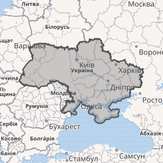
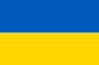

Україна
Матеріал з Вікіпедії — вільної енциклопедії.
Україна— ДЕРЖАВА ,розташована у Східній Європі, охоплює південний захід Східноєвропейської рівнини, частину Східних Карпат і Кримські гори. Межує з Румунією і Молдовою на південному заході, з Угорщиною, Словаччиною та Польщею на заході, з Білоруссю на півночі та з Росією на сході й північному сході. На півдні омивається Чорним та Азовським морями. Площа становить 603 700 км 2. Найбільша за площею країна серед повністю розташованих у Європі.
Прапор України
Станом на останній перепис (2001), населення України становило 48,4 мільйонів осіб.
- Основне й корінне населення України — це українці (77,8 % населення на 2001).
- Також офіційно корінними народами України є кримські татари, караїми та кримчаки
- Значною меншиною є росіяни(17,3 % населення на 2001).
- Історично однією з найбільших меншин в Україні були також українські євреї.
Сучасна Україна, обравши за свій герб знак княжої держави Володимира Великого, проводить свою державність від Русі київських князів династії Рюриковичів IX—XIII століть. За часів свого розквіту, у X—XI століттях, Русь була однією з найбільших i найвпливовіших країн Європи.
Після монгольської навали спадкоємцем Русі стало Королівство Руське XIII—XIV століть, що згодом було поглинуте Великим князівством Литовським й Королівством Польським. Велике князівство Литовське стало фактичним продовжувачем традицій Русі. Руські землі в складі Великого Князівства Литовського користувалися широкою автономією. Велике князівство Литовське й Королівство Польське в 1569 році, уклавши Люблінську унію, об'єдналися у федеративну державу Річ Посполиту, опісля чого сучасні українські землі перейшли під владу Корони Королівства Польського.
- Відновлення української державності відбулося під час Хмельниччини ,з 1648 року ,результатом якої стало утворення автономної козацької держави,Гетьманщини, або Війська Запорозького. Обмежену автономність Гетьманщина зберігала до 1764 року, при тому частина земель відійшла до Речі Посполитої, а інша частина знаходилася під протекторатом Московії, які поступово поглинули козацьку державу. Згодом українські землі були розділені між Російською імперією та Австро-Угорською монархією.
- Державою кримських татар, одного з корінних народів України, був Кримський ханат, що існував на південних українських землях у 1441—1783 роках за правління династії Ґераїв.У 1783 році був анексований Російською імперією.
- Під час української революції початку XX століття на українських землях постало декілька національних держав, перш за все Українська Народна Республіка (УНР, 1917—1921), а також Українська Держава (1918) , Західноукраїнська Народна Республіка (1918—1919) та Кубанська Народна Республіка (1918—1920). УНР наближалася до об'єднання в своєму складі усіх зазначених держав, але внаслідок низки воєн була загарбана сусідами: Радянською Росією, Польською Республікою, Королівством Румунія i Чехословацькою Республікою.
Сучасна держава Україна
Сучасна держава Україна відновила незалежність внаслідок розпаду Радянського Союзу й проголошення незалежності 24 серпня 1991 року , яке закріпив референдум 1 грудня 1991 року.
Україна — унітарна держава, складається з 24 областей, Автономної Республіки Крим i двох міст зі спеціальним статусом: Києва — столиці й найбільшого міста, i Севастополя.
Україна є парламентсько-президентською республікою. Найвищим органом державної влади є Верховна Рада України, а главою держави — Президент України.
З 20 лютого 2014 року Україна захищається від збройного вторгнення Російської Федерації, складовими якого є анексія Криму та окупація частини Донецької та Луганської областей. Новий етап російсько-української війни розпочався 24 лютого 2022 року з широкомасштабним російським вторгненням в Україну.